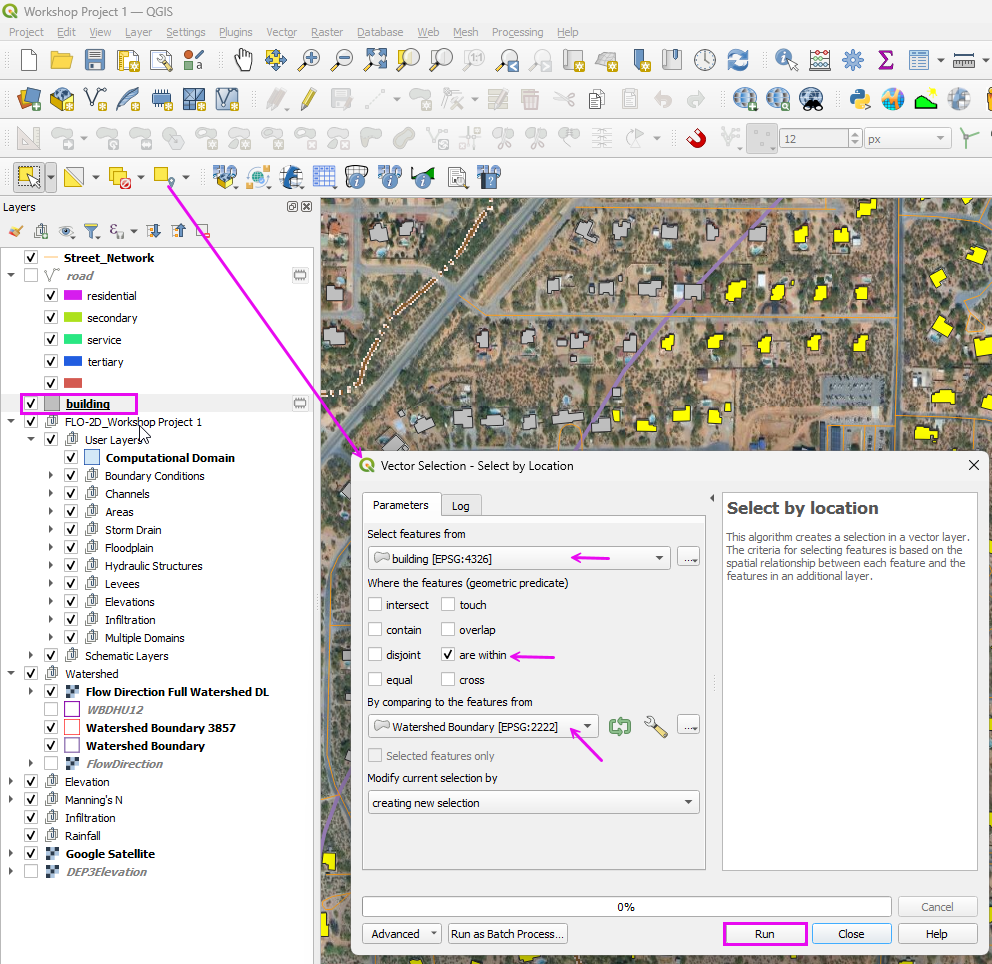
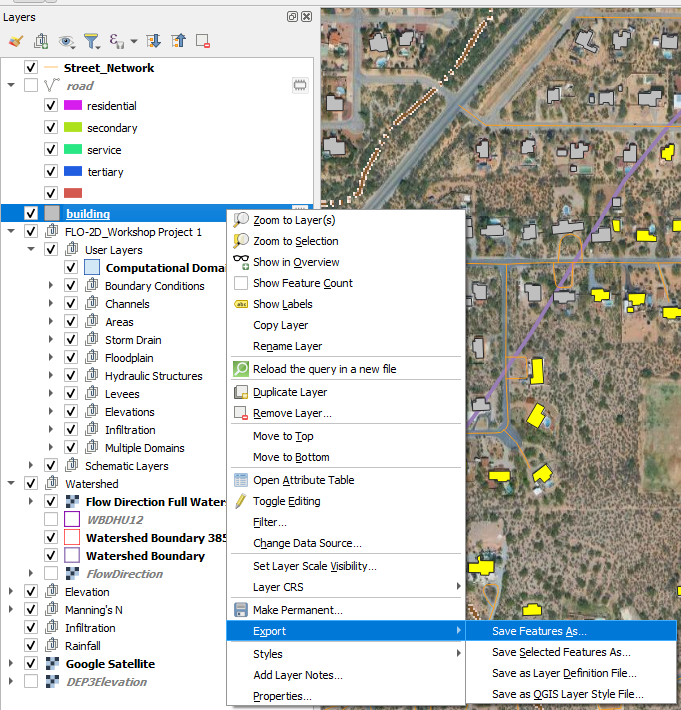
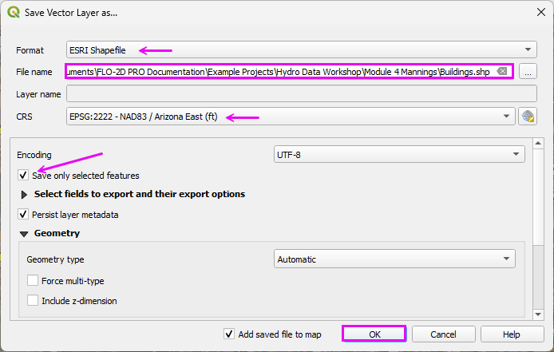
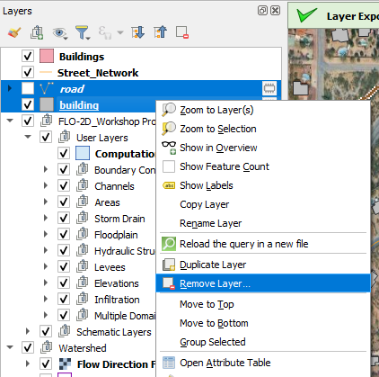
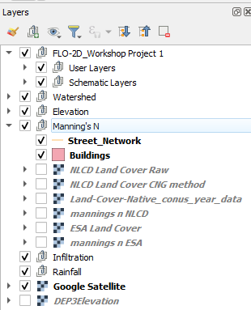

Module 7 - Process Buildings
Step 1. Save Buildings Layer from OSM
Select the buildings by location.
Select Buildings that are within the Watershed Polygon.

Export the Buildings layer.

Save the buildings as an ESRI Shapefile.

Remove the OSM Layers.

Add the exported layers to the Manning’s Group.
